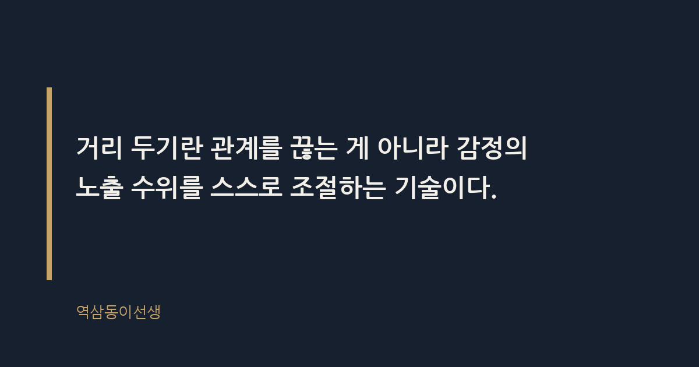
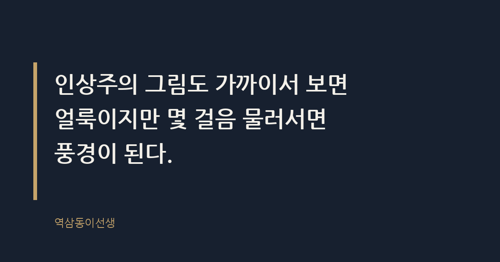

주제 직장 내 인간관계에 지쳤을 때 거리 두는 법 (evergreen / office)
제목 후보
메타 설명 직장 내 인간관계에 지쳤을 때 손절과 거리두기는 다르다. 25년 차가 본 상황별 거리 두는 법과 말하는 요령을 정리했다.
라벨 직장인간관계, 거리두기, 직장생활, 직장스트레스, 인간관계피로, 선긋기, 직장내인간관계거리두는법, 회사인간관계손절, 직장인간관계스트레스극복, 회식거절하는법, 단톡방스트레스
실용 자산 예시 문장 모음 — '거리 두는 법'은 실제 화법과 대응 문장을 찾는 하우투 검색 의도이므로 상황별 멘트 예시를 표로 제공했다
발행 전 팩트체크
이미지 (Blogger 편집기에 드래그해 넣으세요)
도입부 사진 · ⓒ Pexels / Pexels


지난 금요일 저녁 7시, 탕비실에서 커피를 내리는데 옆 칸에서 훌쩍이는 소리가 들렸다. 들어가 보니 입사 2년 차 마케터였다. 이유를 물으니 팀장이 단톡방에 기획안을 올리며 "이걸 누가 이렇게 허술하게 짰냐"고 이름까지 박아 넣었다고 했다. 본인은 사과도 못 받고, 그 방에서 숨죽이며 일주일을 더 버텨야 한다고 했다.
나는 "그 팀장 손절하라"는 말 대신 "거리를 두라"고 했다. 25년 동안 조직 생활을 하면서 사람을 완전히 끊어내려다 본인이 더 다치는 경우를 숱하게 봤다. 직장 내 인간관계에 지쳤을 때 필요한 건 관계의 종료가 아니라 거리의 재설정이다. 끊어내는 건 통쾌하지만 오래가지 못한다. 조절하는 건 지루하지만 오래간다.
직장 내 인간관계 피로란 업무 외 영역까지 감정적 연결을 요구받을 때 발생하는 소진이다. 회사는 계약 관계로 묶인 공간인데, 실제로는 가족보다 많은 시간을 함께 보낸다. 하루 8시간, 주 5일, 거기에 단톡방까지 더하면 깨어있는 시간의 절반 이상을 같은 사람들과 섞여 지내는 셈이다.
여기에 한국 특유의 '정' 문화가 더해진다. 회식에 안 가면 서운해하고, 사적인 질문에 선을 그으면 벽을 쌓는다고 느낀다. 메신저 피로가 심해지는 이유는 업무와 사생활의 경계가 모바일 하나로 뭉개지기 때문이다. 퇴근 후 걸려오는 전화 한 통, 주말에 올라오는 단톡방 메시지 하나가 쌓이면 사람은 지친다. 한 설문조사에서는 직장인 중 상당수가 업무보다 인간관계 때문에 퇴사를 고민한 적이 있다고 답한 것으로 알려졌다. 숫자는 매년 조금씩 다르지만, 체감은 언제나 같다.
나도 입사 5년 차쯤 비슷한 경험을 했다. 당시 사수가 퇴근 후에도 거의 매일 전화를 걸어왔다. "오늘 보고서 어땠는지 다시 얘기해보자"는 명목이었지만, 실은 본인의 불안을 나눠 짊어지라는 요구였다. 처음엔 성실함이라 생각해서 다 받아줬다. 반년쯤 지나니 전화벨만 울려도 심장이 쪼그라드는 지경이 됐다. 그때는 '거리를 둔다'는 개념 자체를 몰랐다. 그냥 참거나 터지거나, 둘 중 하나만 있는 줄 알았다.
손절이란 관계 자체를 단절하는 것이고, 거리 두기란 접촉의 빈도와 깊이만 조절하는 것이다. 손절은 조직 안에서 현실적으로 어렵다. 같은 층, 같은 회의, 같은 프로젝트에서 매일 마주쳐야 하는데 투명인간 취급을 할 수는 없는 노릇이다. 억지로 손절했다가 어색함만 남고, 그 어색함이 평판으로 돌아오는 경우도 봤다.
거리 두기란 관계를 끊는 게 아니라 감정의 노출 수위를 스스로 조절하는 기술이다. 업무 이야기는 하되 사적인 이야기는 줄인다. 점심은 같이 먹되 퇴근 후 술자리는 선택한다. 회사에서는 웃고 떠들되 속마음까지 꺼내지는 않는다. 이게 비겁해 보일 수 있지만, 오히려 가장 성숙한 생존 전략이다.
거리 두기와 무관심을 혼동하면 역효과가 난다. 몇 해 전 후배 하나가 팀장과의 갈등 이후 "거리를 두겠다"며 인사도 형식적으로, 업무 보고도 최소한으로 바꿨다. 본인은 현명한 처신이라 생각했겠지만, 팀 분위기는 그 후배를 '마음이 떠난 사람'으로 읽었다. 결국 다음 프로젝트 배정에서 조용히 제외됐다. 거리를 두는 것과 존재감을 지우는 것은 다르다.
진짜 거리 두기는 티가 나지 않아야 한다. 겉으로는 평소와 다름없이 인사하고, 업무 요청에는 똑같이 성실하게 반응한다. 다만 그 사람이 던지는 감정적 미끼, 가령 뒷담화 제안이나 과도한 친밀감 요구에만 선택적으로 반응하지 않는 것이다. 표가 나는 순간 상대는 방어적으로 변하고, 그 방어가 다시 공격으로 돌아오는 악순환이 생긴다. 조용히, 티 내지 않고 조절하는 게 핵심이다.
말투 하나로 거리의 농도가 달라진다. 거절할 때 핑계를 대면 다음에 또 핑계를 만들어야 하고, 너무 솔직하면 상대가 상처받았다고 소문을 낸다. 애매하게, 그러나 분명하게 말하는 연습이 필요하다. 아래는 실제로 써먹을 수 있는 표현들이다.
| 상황 | 이렇게 말한다 | 이건 피한다 |
|---|---|---|
| 퇴근 후 단톡방 업무 메시지 | "내일 출근해서 바로 확인하겠다" | 즉시 읽씹하고 다음 날 모른 척 |
| 과도한 사적 질문 (연애, 가족사) | "그건 좀 쑥스러워서, 다음에 이야기할게요" | 정색하며 "왜 물어보세요" |
| 회식 참석 강요 | "오늘은 선약이 있어서 먼저 가보겠다" | 매번 몸이 아프다고 거짓말 |
| 뒷담화 자리에 낄 때 | "나는 잘 모르는 부분이라서"라며 화제 돌리기 | 맞장구치며 같이 험담하기 |
| 업무 외 사적 부탁 | "지금 내 일정이 빠듯해서 어려울 것 같다" | 마지못해 수락하고 뒤에서 불평 |
표에 적은 말들은 전부 상대를 탓하지 않는다는 공통점이 있다. "선약이 있어서"는 거짓말이 아니어도 된다. 나 자신과의 약속, 가령 오늘은 일찍 퇴근해서 쉬겠다는 다짐도 엄연한 선약이다. 이 표현들의 핵심은 상대의 요구를 거절하면서도 관계의 문을 완전히 닫지 않는 데 있다. 문을 닫으면 다음에 열기 어렵지만, 살짝 닫아두면 필요할 때 다시 열 수 있다.
인상주의 그림도 가까이서 보면 얼룩이지만 몇 걸음 물러서면 풍경이 된다. 모네의 수련 연작을 코앞에서 보면 그냥 뭉개진 물감 덩어리다. 몇 걸음 물러서야 비로소 연못이 보이고 빛이 보인다. 사람 관계도 똑같다. 너무 붙어 있으면 결점만 보이고, 적당히 떨어져야 그 사람의 좋은 면까지 보인다.
내가 본 바로, 조직에서 가장 오래 살아남는 사람은 모두와 친한 사람이 아니라 모두와 적당히 거리를 유지하는 사람이었다. 반대로 특정 라인에 과하게 밀착했던 동료들은 그 라인이 흔들릴 때 같이 흔들렸다. 임원 인사철마다 그런 장면을 여러 번 목격했다. 줄을 서는 건 짧게는 유리해 보이지만, 길게는 선택지를 좁히는 일이다.
몇 년 전 본부장 라인에 바짝 붙어 있던 팀장이 있었다. 식사도, 골프도, 주말 등산까지 함께할 정도로 밀착했다. 그 본부장이 조직 개편으로 자리를 옮기자, 그 팀장은 하루아침에 '줄 섰던 사람'이라는 꼬리표만 남긴 채 한직으로 밀려났다. 반면 누구와도 적당히 거리를 두던 동료는 본부장이 바뀌어도 늘 비슷한 자리에서 일했다. 적당한 거리는 재난 상황에서도 흔들리지 않는 밑천이 된다.
거리를 둬야 할 타이밍은 머리보다 몸이 먼저 안다. 특정 사람의 메시지 알림음만 들어도 어깨가 굳거나, 그 사람과 회의가 잡힌 날 아침부터 속이 더부룩하다면 이미 신호가 온 것이다. 나는 이걸 '알림음 반응'이라고 부른다. 같은 진동인데 어떤 사람 이름이 뜨면 멀쩡하고, 어떤 사람 이름이 뜨면 숨이 막힌다. 그 차이를 무시하지 않는 게 거리 두기의 시작이다.
몸의 신호를 무시하고 계속 버티면 번아웃으로 이어진다. 번아웃이란 특정 자극에 대한 반복 노출로 감정적 자원이 고갈된 상태다. 탕비실에서 울던 후배도 이미 몇 주 전부터 출근길에 체했다는 얘기를 자주 했다. 그때 거리를 뒀다면 눈물까지 가지 않았을 수도 있다. 몸이 보내는 신호는 늘 말보다 정직하다.
거리를 두는데도 죄책감이 드는 이유는 한국 조직 문화가 정을 능력과 동일시하기 때문이다. 살갑지 않으면 사회성이 부족한 사람으로 낙인찍힐까 봐 걱정한다. 그러나 실제 평가 테이블에서 "저 사람 정이 많다"는 말이 승진 사유로 올라가는 걸 본 적은 없다. 올라가는 건 늘 성과와 신뢰다. 거리를 둔다고 신뢰가 깨지지 않는다. 오히려 할 말과 안 할 말을 구분하는 사람이 더 신뢰받는다.
거리를 두는 건 관계를 포기하는 게 아니라 관계를 오래 지속시키기 위한 투자다. 무리해서 가까워진 관계는 한쪽이 지치는 순간 와르르 무너진다. 적당히 거리를 둔 관계는 지치지 않으니 오래간다. 탕비실에서 울던 후배에게 한 말도 결국 이거였다. 팀장과 손절하라는 게 아니라, 그 단톡방에서 네 감정까지 전시하지 말라는 것.
씁쓸하면서도 꽤 인상적인 건, 거리를 둔 뒤로 오히려 관계가 편해졌다는 후배들의 고백이 많다는 점이다. 적당히 멀어지니 오히려 덜 미워하게 됐다고들 한다. 직장 내 인간관계에 지쳤다면, 그 사람을 지워버리려 애쓰지 말고 한 걸음만 물러서 보라. 모네의 연못처럼, 물러서야 보이는 풍경이 있다.
Q. 직장에서 누군가와 거리를 둔 뒤 오히려 관계가 편해진 적, 저만 있는 건 아니죠?